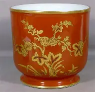
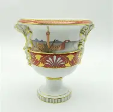
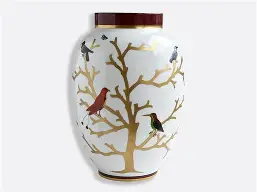
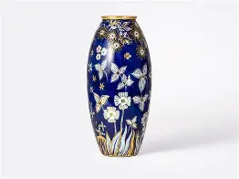
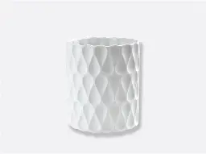
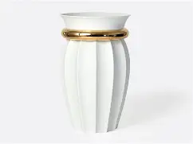

Vase à décor floral
Provenance : Limoges, XIXᵉ siècle
Vase en porcelaine fine décoré de motifs floraux peints avec de l'or à la main, illustrant le savoir-faire traditionnel limougeaud.

Vase marin
Provenance : Limoges, XVIIIᵉ siècle
Vase représentant un bateau sur les rives de la Garonne au XVIIIᵉ siècle.

Vase décoré d'oiseaux
Provenance : Limoges, XVIIᵉ siècle
Vase mettant en scène des oiseaux sur un arbre. Il a été commandé par un riche marchand basque.

Vase bleu carmin
Provenance : Limoges, XVIIIᵉ siècle
Vase décoré de fin détails. Ce vase a été réalisé avec du Lapis lazulis ( pierre précieuse bleue ).

Vase moderne
Provenance : Limoges, XXIᵉ siècle
Vase aux formes modernes et contemporaines. Actuellement commercilisé dans toute la France, il prend en compt les nouvelles formes modernes.

Vase en céramique
Provenance : Italie, XIXᵉ siècle
Vase qui vient tout droit d'Italie. Il a été acheté par le musée de la porcelaine de Limoges en 2012, afin de créer une section art du monde.